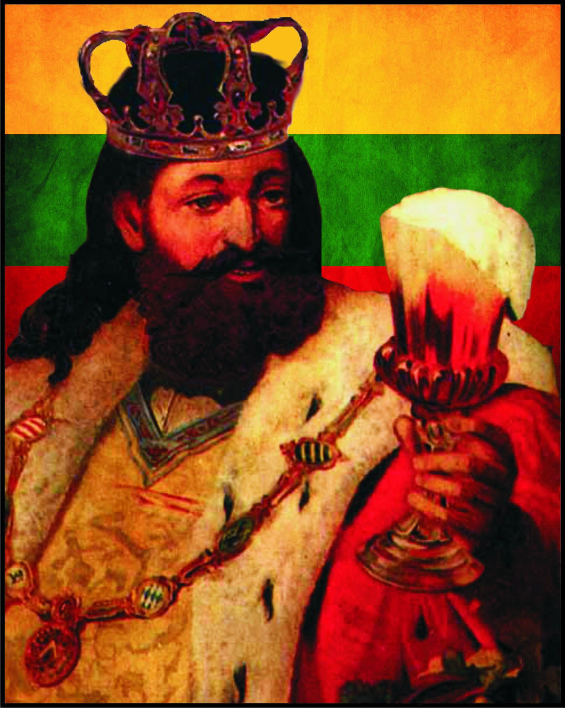

Sausio 1 yra 1-a metų diena pagal Grigaliaus kalendorių.
Nuo šios dienos iki metų galo lieka 364 dienos (keliamaisiais metais – 365)
Laisvės gynėjų diena:
Laisvės gynėjų diena – sausio 13 d. minima Lietuvos atmintina diena. Keliama Lietuvos valstybės vėliava.
1991 metais šią dieną įvyko masinis taikus Lietuvos piliečių pasipriešinimas Sovietų Sąjungos vadovybei jėga paimti į savo rankas Vilniaus televizijos bokštą. Bandymai šturmuoti Radijo ir televizijos komiteto pastatą,
Parlamento pastatą ir kitus valstybiniam perversmui reikšmingus objektus buvo vykdomi nuo sausio 9 d. Užimti atvyko specialiai parengta, sunkiąja karine technika ginkluota desantininkų grupė.
Prie televizijos bokšto Vilniuje per 600 taikių ir neginkluotų žmonių buvo sužeista, žuvo 14. Televizijos bokštas buvo užimtas, tačiau planų pulti Parlamentą kariškiai atsisakė.
Nors užgrobti kai kuriuos objektus ir pavyko, galutiniai operacijos tikslai (užimti parlamentą, išprovokuoti nesantaiką tarp įvairių tautybių Lietuvos piliečių, pateikti šiuos įvykius kaip dviejų ginkluotų pusių kovą) nebuvo pasiekti, ir gana greitai Sovietų armijai teko iš užimtų objektų pasitraukti.
Lietuvos valstybės atkūrimo diena
Lietuvos valstybės atkūrimo diena – vasario 16 dieną minima Lietuvos šventinė diena. Keliamos Lietuvos valstybės vėliavos.
Vasario 16-oji – Lietuvoje valstybinė šventė,
skirta 1918-aisiais Lietuvos Tarybos narių pasirašytam Lietuvos nepriklausomybės nutarimui paminėti.
Šį dokumentą pasirašė 20 Lietuvos Tarybos narių.
Šią istorinę dieną –
vasario 16-ąją Lietuvos Respublikos Seimas įstatymiškai įteisino kaip šventinę dieną –
Lietuvos valstybės atkūrimo dieną.
Užgavėnės
Užgavėnės – archaiška žiemos šventė, simbolizuojanti žiemos išvarymą siekiant
prisišaukti pavasarį bei žyminti paskutinę žiemos mėsiedo dieną.
Šventė žavi liaudiško humoro grožiu ir kūrybingumu.
Pagrindiniai šventės simboliai – persirengėliai,
kaukės, blynai, Lašininio ir Kanapinio kova, Morės deginimas.
XX a. pabaigoje Užgavėnės daugelyje Lietuvos regionų, išskyrus Žemaitiją, buvo primirštos,
tačiau apie 1985–1990 metus jos vėl buvo atgaivintos.
Žemaičių Užgavėnių tradicijas perėmė ir kiti regionai.
Užgavėnių pavadinimas kilęs nuo gavėnios pavadinimo,
o pastarasis nuo žodžių „gavėti“ (silpti) bei „gautis“ (žemė gaunasi iš po žiemos miego).
Seniau Užgavėnės buvo vadinamos Ragučio švente.
Užgavėnių šventė nuo senų laikų žinomos visoje Europoje.
Pagal liaudies mąstyseną, Užgavėnės – tai slenkstis tarp nueinančios žiemos ir ateinančio pavasario.
Savo pobūdžiu Užgavėnės yra tarsi karnavalas – tai liaudies šventė nesusijusi su jokiomis bažnytinėmis apeigomis (išskyrus faktą, kad šventės laikas priklauso nuo Velykų laiko). Užgavėnės švenčiamos likus 47 dienoms iki Velykų, taigi data kasmet kinta nuo vasario 3 iki kovo 9 dienos.
Lietuvos nepriklausomybės atkūrimo diena
Lietuvos Nepriklausomybės atkūrimo diena –
viena iš Lietuvos valstybinių švenčių. Minima kovo 11 d., pažymint 1990 m.
tą dieną Aukščiausiosios Tarybos –
Atkuriamojo Seimo pasirašytą Lietuvos nepriklausomybės atstatymo aktą.
Tai viena iš trijų pagrindinių Lietuvos valstybės švenčių kartu su Lietuvos valstybės atkūrimo diena,
minima vasario 16 d.,
ir Valstybės diena, minima liepos 6 d.
Šv. Velykos
Velykos arba šventos Velykos, Kristaus prisikėlimas – seniausia ir svarbiausia krikščionių šventė.
Švenčiama paminėti Kristaus prisikėlimą iš numirusiųjų po nukryžiavimo, kuris laikomas viso krikščioniškojo mokymo pagrindu.
Naujajame Testamente rašoma, kad tai įvykę trečią dieną po Kristaus mirties (mirties dieną skaičiuojant kaip pirmą dieną).
Šioje šventėje krikščioniškieji elementai susilieja su senosiomis liaudies tradicijomis, su augmenijos prisikėlimo apeigomis,
kuriose buvo garbinama deivė Žemyna.
Velykų data nustatoma pagal Mėnulio-Saulės kalendorių ir Vakarų bažnyčiose Velykos visada švenčiamos pirmąjį sekmadienį po
pirmos pavasario (po pavasario lygiadienio) pilnaties. Toks būdas apskaičiuoti Velykų datą nustatytas 325 m.
Pirmojo Nikėjos susirinkimo metu. Jis buvo įvestas tam, kad krikščioniškoji šventė nesutaptų su žydų Pesachu,
tautos išėjimo iš Egipto nelaisvės paminėjimu[8]. Pagal Grigaliaus kalendorių ši data anksčiausiai būna kovo 22 d.,
o vėliausiai balandžio 25 dieną. Rytų krikščionių bažnyčios naudoja Julijaus kalendorių,
kurio kovo 21 d. atitinka Grigaliaus kalendoriaus balandžio 3 d. Dėl to Rytų krikščionių bažnyčiose
Velykų data gali būti nuo balandžio 4 d. iki gegužės 8 d.
Pagal Velykų datą nustatomos ir kitos kintamos datos Velykų laikotarpio šventės.
Tarptautinė darbo diena
Tarptautinė darbo diena – šventė, taip pat vadinama darbuotojų diena, minima gegužės 1 dieną.
Šios dienos istorija siekia 1886 metus,
kai Čikagoje darbuotojai protestavo reikalaudami sutrumpinti darbo dieną iki 8 valandų.
Motinos diena
Motinos diena – šventė, skirta pagerbti motinas. Lietuvoje švenčiama pirmąjį gegužės sekmadienį (oficialiai nuo 1928 metų).
Kaip oficiali šventė įsteigta JAV metodistų bažnyčios narės iš Vakarų Virdžinijos Anos Džervis (Anna Jarvis).
Šią šventę ji pradėjo švęsti kaip savo mirusios motinos atminimo dieną,
o vėliau kreipėsi į JAV valdžią, kad būtų paskelbta kasmetinė šventė, skirta motinų atminimui.
Tėvo diena
Tėvo diena – šventė, kurioje švenčiama tėvystė, panašiai kaip ir per motinos dieną – motinystė.
Šią dieną oficialiai pirmiausiai pradėjo švęsti JAV, kur tėvo diena švenčiama panašiai kaip ir motinos diena.
Šį judėjimą tėvams pagerbti sukūrė 1910 m. Louisa Dodd. Jos motina mirė gimdydama šeštą vaiką
ir tuomet jos tėvas vienas užaugino visus vaikus.
Joninės
Joninės minimos naktį iš birželio 23 dienos į 24 dieną.
Tai trumpiausia naktis, kai galima šėlioti, šokinėti per laužus ir smagiai leisti laiką su draugais ir kitais aplinkiniais.
Tai tampa įmanoma, nes Lietuvoje Joninių diena (birželio 24-toji) yra paskelbta nedarbo diena.
Mindaugo karūnavimo diena

Mindaugo karūnavimo diena – tai šventė, kuria norima paminėti pirmojo ir vienintelio Lietuvos karaliaus Mindaugo karūnavimą ir
Lietuvos kaip valstybės pripažinimą. Mindaugas buvo karūnuotas 1253 m., manoma, kad Liepos 6 d., bet ši šventė pradėta minėti
tik nuo 1990 m.,
kai Atkuriamasis seimas įtraukė šią dieną į valstybinių švenčių sąrašą.
Žolinės
Kasmet vasaros pabaigoje yra švenčiama Žolinių šventė.
Tai šventė, kurią lietuviai mini nuo senų laikų. Žolinės minimos rugpjūčio 15-ąją.
Žolinės 2020-aisias švenčiamos savaitgalį. Todėl tai puiki proga paminėti šventę,
aplankyti įvairius renginius ir išbandyti paskutines vasaros pramogas.
Šią dieną visoje Lietuvoje rengiami koncertai, bendruomenių susibūrimai.
Mindaugo karūnavimo diena
Mindaugo karūnavimo diena – tai šventė, kuria norima paminėti pirmojo ir vienintelio Lietuvos karaliaus Mindaugo karūnavimą ir
Lietuvos kaip valstybės pripažinimą. Mindaugas buvo karūnuotas 1253 m., manoma, kad Liepos 6 d., bet ši šventė pradėta minėti
tik nuo 1990 m.,
kai Atkuriamasis seimas įtraukė šią dieną į valstybinių švenčių sąrašą.
Žolinės
Kasmet vasaros pabaigoje yra švenčiama Žolinių šventė.
Tai šventė, kurią lietuviai mini nuo senų laikų. Žolinės minimos rugpjūčio 15-ąją.
Žolinės 2020-aisias švenčiamos savaitgalį. Todėl tai puiki proga paminėti šventę,
aplankyti įvairius renginius ir išbandyti paskutines vasaros pramogas.
Šią dieną visoje Lietuvoje rengiami koncertai, bendruomenių susibūrimai.
Mindaugo karūnavimo diena
Mindaugo karūnavimo diena – tai šventė, kuria norima paminėti pirmojo ir vienintelio Lietuvos karaliaus Mindaugo karūnavimą ir
Lietuvos kaip valstybės pripažinimą. Mindaugas buvo karūnuotas 1253 m., manoma, kad Liepos 6 d., bet ši šventė pradėta minėti
tik nuo 1990 m.,
kai Atkuriamasis seimas įtraukė šią dieną į valstybinių švenčių sąrašą.
Visų šventųjų diena, Vėlinės
Lapkričio 1-ąją liturgine šventųjų atminimo švente paskelbė popiežius Bonifacas IV VII a.
pradžioje. 998 m. popiežius Grigalius šventę papildė lapkričio 2-ąja, skirta pagerbti mirusiuosius
- Lietuvoje tą dieną minimos Vėlinės,
ir abi šventės visuomenėje neretai minimos kaip viena.
Šv.Kūčios
Kūčios minimos gruodžio 24-ąją, Kalėdų išvakarėse.
Krikščioniškame pasaulyje šią dieną įprastai švenčiamas Jėzaus gimimas,
tačiau mūsų šalyje ši šventė yra unikali ir turi gilias tradicijas bei pagonišką kilmę
– Saulėgrįžą.
Šv. Lalėdos
Šv. Kalėdų tradicijų kilmė
Tai prosenovinė šventė. Jos pavadinimas žinomas daugeliui tautų (romėnams, graikams,
slavams ir kt.). Lietuvoje žodis kalėdos randamas XVI–XVII
a. raštuose. Šios šventės pavadinimu dar 1823 metais susidomėjo D.Poška, o 1913 m.
– kalbininkas K. Būga, šį pavadinimą kildindami iš romėnų šventės Calendae.
Pradinė žodžių kalendorius ir Kalėdos (lot. Calendarium ir Calendae) reikšmė gimininga.
Calendarium vadinta skolų knyga, o Calendae reiškė kiekvieno mėnesio, kai mokamos tos skolos,
pirmą dieną. Ilgainiui Calendae arba Kalenda imta vadinti pirmąją Naujųjų metų dieną.